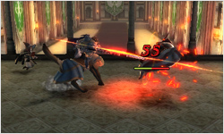
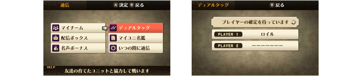
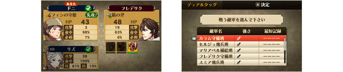
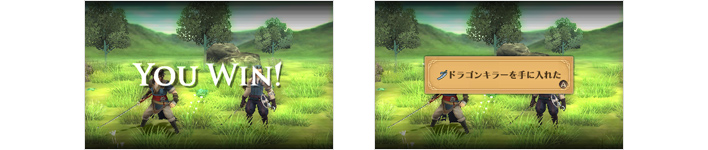
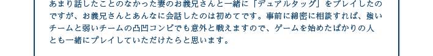

『ファイアーエムブレム 覚醒』では、マップ上で進撃準備メニューを開き、「通信」を選択すると、さまざまな通信関連の機能を利用することができます。その中でも、読者のみなさんにも特にプレイしてみてほしいのが「デュアルタッグ」です。
「デュアルタッグ」は、ニンテンドー3DS本体と『ファイアーエムブレム 覚醒』のゲームカードを持っている友達同士で2人が協力してバトルを楽しめるモードです。片方のニンテンドー3DSで「デュアルタッグ」の部屋を作成し、もう片方から通信経由で作成された部屋に入れば準備完了です。

まず戦う敵軍を選んで、お互いのプレイヤーがゲーム中で育てた仲間の中から「デュアルタッグ」に参加させる仲間を最大3人まで選びます。さらに、その3人の中から1人ずつ選ぶと、先に紹介した「ダブル」の状態で敵軍とのバトルが始まります。
何度もバトルをくり返すと、「デュアルアタック」や「デュアルガード」の発生率が上がっていき、タッグのパワーもどんどんアップしていきます。とても勝てそうにない強い相手でも、バトルの後半になるにしたがって逆転できる可能性が上がっていくのです。
何度もバトルをくり返すと、「デュアルアタック」や「デュアルガード」の発生率が上がっていき、タッグのパワーもどんどんアップしていきます。とても勝てそうにない強い相手でも、バトルの後半になるにしたがって逆転できる可能性が上がっていくのです。

HPが1しかなくなってしまったユニットでも、うまく「デュアルガード」を発生させれば勝つことができます。逆に、タッグの連携がうまくいかないと、アッサリ負けてしまうこともあります。友達とハラハラドキドキしながら盛り上がること間違いなしです。
バトルに勝利すると、敵軍の強さによって珍しいアイテムと名声ポイントが手に入ります。「デュアルタッグ」では、武器の使用回数も減らず、バトルに負けても死亡扱いにはならないので、プレイするほどお得です。
バトルに勝利すると、敵軍の強さによって珍しいアイテムと名声ポイントが手に入ります。「デュアルタッグ」では、武器の使用回数も減らず、バトルに負けても死亡扱いにはならないので、プレイするほどお得です。

「デュアルタッグ」では、どの仲間を連れて行くか、どの武器を装備させていくかといったことが、戦略上とても重要になります。事前に「デュアルタッグ」用に仲間を育成したり、戦う相手によって仲間と武器の組み合わせを変えたりと、頭を使ってうまくいったときの爽快感は格別です。
